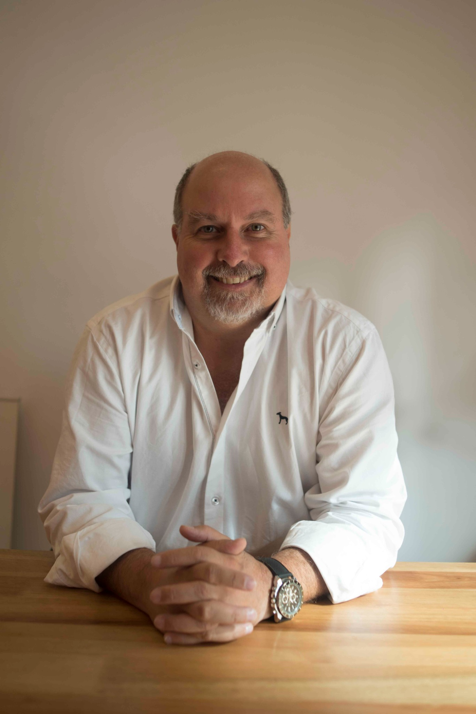
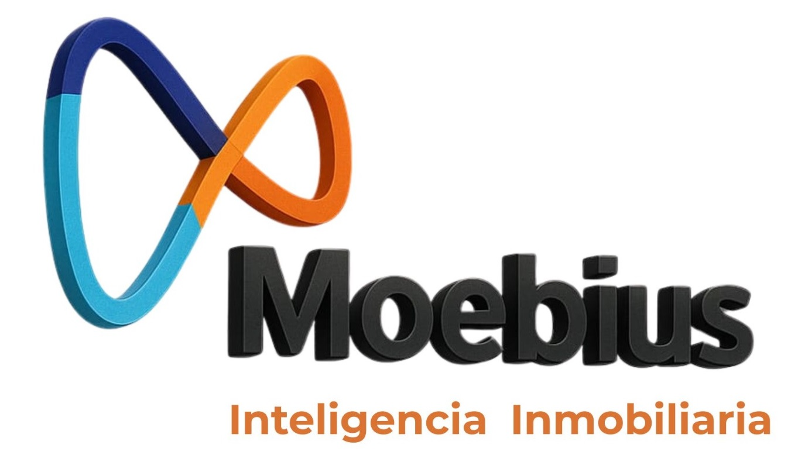

El País
Lecturas del posicionamiento de Montevideo y del mercado inmobiliario uruguayo en perspectiva regional.
Artículos originales · Enlaces por incorporarInvestigación, experiencia comercial y conocimiento del inversor para interpretar mercados, descubrir oportunidades y acompañar decisiones.

Mi trabajo integra investigación inmobiliaria, conocimiento del inversor y asesoramiento comercial. El objetivo no es acumular información, sino encontrar las preguntas que cambian una decisión.
Desde Moebius desarrollo herramientas para comparar mercados, analizar proyectos y detectar las fricciones que pueden impedir que una propuesta inmobiliaria llegue a su inversor.
Esta mirada se aplica a desarrolladores, empresas y territorios que necesitan comprender mejor su mercado y transformar conocimiento en acción.
Las investigaciones y reflexiones de Moebius han tenido difusión en medios de Uruguay, Paraguay y Argentina. Seleccionamos tres cabeceras relevantes para presentar esta dimensión pública del trabajo.
Lecturas del posicionamiento de Montevideo y del mercado inmobiliario uruguayo en perspectiva regional.
Artículos originales · Enlaces por incorporarInvestigaciones sobre Asunción, Ciudad del Este y oportunidades de inversión inmobiliaria.
Artículos originales · Enlaces por incorporarComparaciones latinoamericanas sobre precios inmobiliarios, alquileres y rendimiento del capital.
Artículos originales · Enlaces por incorporarVersión para revisión: no se atribuyen titulares, fechas ni enlaces específicos hasta comprobar las publicaciones originales.
Distintas herramientas e investigaciones Moebius permiten estudiar mercados, destinos de inversión y decisiones comerciales desde perspectivas complementarias.
Las cifras describen el alcance de las investigaciones y publicaciones de Moebius, no años de experiencia ni proyectos asesorados.
Si está desarrollando un proyecto, evaluando un mercado o buscando conquistar nuevos inversores, podemos conversar sobre las decisiones que tiene por delante.
Conversemos sobre su proyecto →
Moebius es una consultora especializada en investigación, inteligencia del inversor y asesoramiento inmobiliario. Bajo mi dirección desarrollamos metodologías e investigaciones propias para interpretar mercados, comprender cómo decide el inversor y ayudar a empresas, desarrolladores y organizaciones a tomar mejores decisiones.
Nuestro trabajo integra análisis de ciudades latinoamericanas, evaluación de proyectos, oportunidades de inversión y estrategias de comercialización.
La investigación genera conocimiento. El asesoramiento lo transforma en decisiones.
Conversemos sobre tu proyecto →